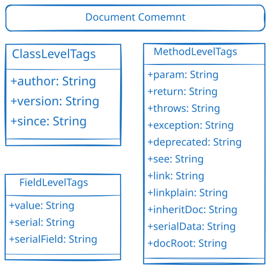

/** 文档注释 */常用标签
| 标签 | 说明 | 示例 |
|---|---|---|
@author |
作者信息 | @author 张三 |
@version |
版本号 | @version 1.0 |
@since |
起始版本 | @since 1.8 |
@param |
方法参数说明 | @param name 用户名 |
@return |
返回值说明 | @return 计算结果 |
@throws |
抛出的异常 | @throws IOException 输入输出异常 |
@see |
参考链接 | @see java.lang.String |
@deprecated |
已过时 | @deprecated 使用新方法代替 |
| 标签使用示例 |
/**
* 计算两个数的和
*
* @param a 第一个加数
* @param b 第二个加数
* @return 两个数的和
* @throws IllegalArgumentException 如果参数为负数
* @see Math#addExact(int, int)
* @since 1.0
* @author 开发团队
*/
public int add(int a, int b) throws IllegalArgumentException {
if (a < 0 || b < 0) {
throw new IllegalArgumentException("参数不能为负数");
}
return a + b;
}
/**
* 已过时的方法，请使用{@link #newMethod()}代替
*
* @deprecated 从版本2.0开始不再推荐使用
*/
@Deprecated
public void oldMethod() {
// 旧方法实现
}
| 标记 | 说明 | 示例 |
|---|---|---|
TODO |
标识需要完成的工作 | // TODO: 实现用户验证逻辑 |
FIXME |
标识需要修复的问题 | // FIXME: 这里存在内存泄漏风险 |
XXX |
标识有问题或需要改进的代码 | // XXX: 这个实现效率较低，需要优化 |
HACK |
标识临时解决方案或取巧的代码 | // HACK: 临时绕过权限检查 |
// TODO: 实现用户验证逻辑
// TODO: 添加缓存机制
// FIXME: 这里存在内存泄漏风险
// FIXME: 时区处理有问题
// XXX: 这个实现效率较低，需要优化
// XXX: 临时解决方案，需要重构
// HACK: 临时绕过权限检查
// HACK: 由于第三方库的限制，这里需要这样写